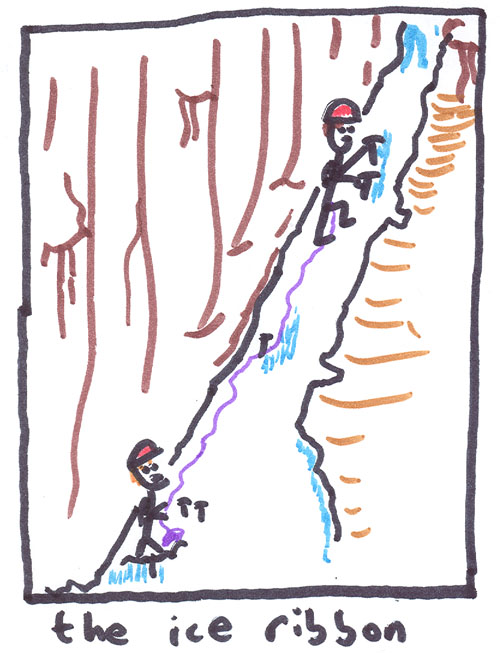
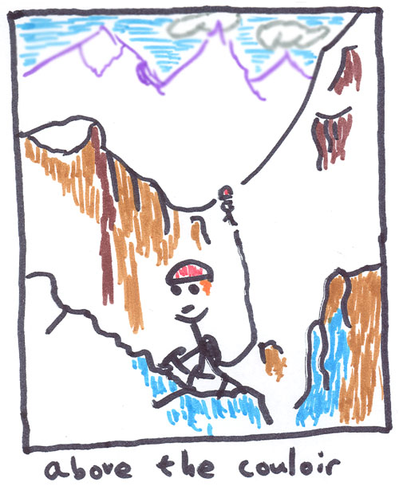
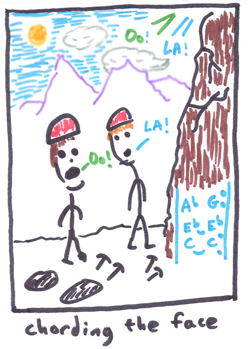

Cutthroat Peak
East Face Couloir
I had Friday off of work and was able to convince Alex to join me for a fun day climb. He wanted to climb the East Face Couloir of Cutthroat Peak, something that intimidated me a little bit. I’m not much of an ice climber so the WI4-5 rating along with pictures of climbers clinging to bits of ice on a cliff face had scared me away. But Alex is an experienced ice climber, so it was a great chance for me to learn something. Happily, reports so far this year indicated that the ice was thicker than normal and easier to climb and protect. However, an early start is essential on this climb. I read several reports where people had to scurry away from falling ice chunks, or soldiered on only to find scary climbing in soft snow above the steepest part of the couloir.
With that in mind, we drove from my house at 7 pm Thursday night, wondering if we should just climb at night or get a few hours of sleep at the trailhead. We ate sandwiches and talked about the crazy world. At the Blue Lake trailhead it felt really warm, and the snow wasn’t frozen. We decided to sleep and both slept really well. We heard the tiny alarms and were stomping down from the highway a few minutes after 3 am.

Alex leading the ice ribbon.
{kind=link}
Tracks led us to the river crossing where soft snow bridges required jumps to avoid a certain wetting. Above the river we took off snowshoes and slogged up a steep brushy hillside until the angle levelled off and the snow became deep again. We had climbed into the basin used to access the South Buttress and needed to traverse around to the east (right). Here the night-time view was beautiful. A nearly-full moon floated above Silver Star Mountain and it’s snaking gullies. Cool (not cold) crisp air made mountains across the valley seem very close. Climbing steeper slopes, we were soon standing in front of the East Face Couloir, and a faint dawn light allowed us to put our headlamps away. We’d better hurry to beat the sun!
Caching snowshoes, we kicked steps and front-pointed up snow and avalanche debries. The couloir began to swallow us up, like a lolling extended tongue. A few hundred feet up we reached an obvious belay location. I could hide behind a buttress while Alex led the first ice step. It was a good thing too, because it wasn’t long before he was sending down a set of exciting yet unwanted gifts! It was hard to get used to the low buzzing whirr of ice chunks going right by my head. Alex climbed steadily, and just as I was beginning to simul-climb he reached a belay stance. He had climbed the entire ice section in one 60-meter pitch.
Removing the belay ice-screw, I climbed some snow to a short-but-steep ice step. “Be gentle,” called Alex. Indeed the ice was thin. A few delicate moves got me above the step. I had read about sections of the ice “delaminating” from the rock, and this was an ideal location, as an overhanging bulge of rock was just underneath. When that happens, the pitch will be even harder! Above this I rested a moment at the fixed anchor below a spectacular-looking ribbon of ice in a corner.
As I climbed it, I enjoyed the way my tools and crampons were placed just inches from the edge of the ice ribbon. They would be useless on the crummy-looking rock face next door. Amazingly, Alex was able to protect well with solid ice screws. The wall behind me folded over in a way that I could rest my back on it’s friendly surface while cleaning screws. “Don’t fall once you remove the last screw Michael,” said Alex. Immediately I pictured arcing backwards in a swan song of horror. Like many mountain anchors, the one he stood at was marginal, consisting of a good nut and two somewhat poor ice screws. To climb in the mountains means to accept this sort of thing on occasion, so I focused with full awareness. Maybe this is why leading is usually more fun than following a pitch. When following, you (mis)place a lot of trust in the rope overhead and end up thinking about a lot of things other than just the climbing. But when that security is missing in a real way, your mind is a steel trap (or in my case, a rusty rabbit cage…with a new lock!). It’s so much fun to forget everything but the moment!
I climbed a few feet above Alex, took the gear and climbed snow to a sling with two pitons. Alex felt better after the clip. Above, I entered a small cavelet with a steep ice step marking the exit. After placing a marginal screw I crabbed up and right on the ice, calves burning a little. I totally missed a big pillar of ice on my right that would have given good ice screw protection. Continuing, a rib of snow over ice led to an awkward stance at a tree on the right side of the broad gully.

We wondered where to go from here. The summit didn’t seem far, but it could be one of two blocks up and left of us. Alex went to the other side of the gully, then climbed snow and rock on the left side after clipping a fixed sling on a pitiful schrub. Easy snow slopes led to the ridge crest further left, but we ignored it. In retrospect, we think that was the right way to go.
I simul-climbed to the pitiful schrub at which point Alex was able to build a belay on the ridge crest. This pitch was really interesting from here. Some solid low-angle ice led to a rock step where Alex placed two good cams. Bits of ice and snow in the right places allowed passage between two buttresses. More ice and snow led to the ridge crest where Alex had a comfortable belay.
He’d been eyeing the pitch to the summit (we thought). “Let’s just bail!” he said wisely. I thought I’d give it a shot though. Steep rotting snow had to be climbed for about 50 feet to reach rock protection and the final moves. But the snow was un-nerving. I did ok for a while, but soon the steps I kicked began collapsing easily and my axe scraped uselessly against smooth slabs just under the snow. Without the ability to self-belay with my ax it started to seem like a fools-errand. Treating it like an aid climb, I moved left hoping to find marginally thicker snow cover. This gave me another 5 feet of vertical, then there was nothing. So I climbed down carefully, glad to have given it a go.
Alex left a baby angle piton and a nut to rappel from, backed up with a cam while he went down. I removed the cam and followed. Rappelling with 7mm twin ropes in a Reverso is a little nerve-wracking! I need to get a smaller belay device for this. At our tree I made the next rappel to the pitons. Alex left a great 3rd piton here and one of our slings. It seems wise to be safety-conscious on these piton rappels. Another rappel below the ice ribbon took us to easy ground low in the couloir. Soon we were baking in the sun and eating a sandwich below the face. It had been a fun and reasonably safe climb, not quite what I’d expected. It was too bad we didn’t climb the summit block, but at least we got the great views of Black Peak and Goode from the ridge crest just below the summit.
Before leaving we had some fun making the face echo notes that we would sing. We got some great minor 3rd intervals that really sounded creepy. By switching notes fast enough you could create a chord. Man did it sound cool.

<div class="caption">Making echos on the face.
</div>
{kind=link}
On the way down a party in another basin thought we were “Eric.” We cleared up the confusion and continued on our way, choosing to just bash down the eastern valley rather than get back into the basin below the South Buttress route. This worked well enough, and sometime after noon we were opening the car and changing out of soggy boots. Eric drove up and began talking via “Motorolla Talkabout” to his partners high above. It was a great ride back down Highway 20. We never get to see it on a sunny, hot afternoon. Too often we are driving in or out late at night. Fisher, Graybeard, Colonial, Crater and Davis peaks looked awesome.